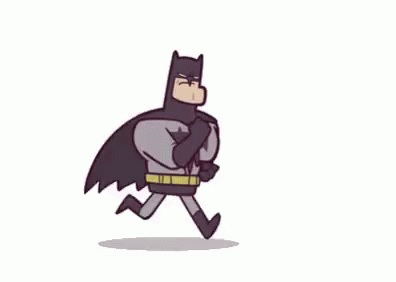

Batman: historia y origen | Uno de los personajes más importantes de DC Comics cumple 80 años desde su primera publicación.
se ha posicionado como uno de los mejores superhéroes del mundo sin tener ningún superpoder.
El concepto original del personaje fue creado por Bob Kane al inspirarse en Sherlock Holmes, Zorro y un borrador de una máquina voladora con alas de murciélago de Leonardo Da Vinci. Luego de eso, Bill Finger se unió a su trabajo para desarrollarlo más, escribiendo así el primer guión mientras que Kane dibujaba.
Y fue así como en mayo de 1939, originalmente llamado "The Bat-Man", se publicó por primera vez la aparición del personaje en el Número 27 de "Detective Comics Vol 1", una antología que presentaba diferentes detectives, tanto en forma de civiles como de superhéroes.
En este primer número, Bruce Wayne y el comisionado Gordon se encuentran conversando sobre un tal "Bat-Man" que lo intriga, cuando llaman al segundo para revisar una escena del crimen. Después de que ambos se separen, el mismísimo "Bat-Man" aparece para resolver el problema, para luego desaparecer entre las sombras.
Al final, se revela que él es en realidad Bruce Wayne, comenzando así el legado del 'Hombre Murciélago'.

| Si bien muchos indican que el nacimiento de Batman sucedió al momento de que sus padres fueron asesinados, el manto fue creado por Bruce Wayne luego de sus años de estudio y entrenamiento. Él se sentía incompleto, a pesar de tener todo para poder combatir el crimen.
Fue una noche, sentado en su mansión, cuando recordó su miedo a los murciélagos al ver uno chocar contra su ventana. Su inspiración lo llevó a crear un traje basado en este animal con tecnología experimental, y salió por Gotham City en las noches a luchar contra el crimen. Poco a poco, el superhéroe se convirtió en una leyenda viva de su ciudad, eliminando a los pequeños asaltantes por no poder hacer nada para enfrentarlo. Sin embargo, su aparición también llevó a otros criminales más peligrosos a tomar el liderazgo de la ciudad, contaminando a la misma con mafias y corrupción en los órganos gubernamentales. |
 |
Batman es el mejor superheroe de todos y no existe en la vida real porque no lo merecemos.